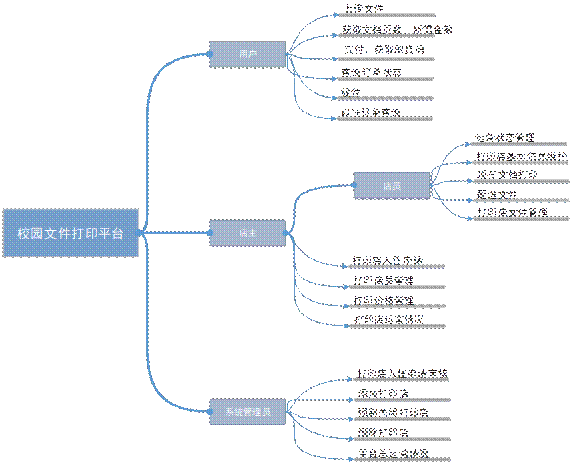

本科毕业设计（论文）开题报告
|
题目： |
基于.NET的校园文件打印平台 |
|
设计与实现 |
|
|
学生姓名 |
邓凯 |
学 号 |
201531060175 |
|
教学院系 |
计算机科学学院 |
||
|
专业年级 |
软件工程2015级 |
||
|
指导教师 |
王丹东 |
职 称 |
讲师 |
|
单 位 |
西南石油大学 |
||
随着现代商业社会的快速发展，社会竞争日益激烈，生活节奏加快，对于时间的把握，对事件的方便快捷提出了更高的要求，校园文件打印平台为用户提供更加方便快捷的打印服务。
目前许多高校内有许多小型打印店，学生需要打印时须自己到打印店，用事先备好的U盘或者通过网络下载自行打印文件。就用户而言，目的只是打印文档，然而不仅需要到打印店排队打印，而且还需要承担U盘中毒等风险。对于打印店工作者而言，当来打印的人数较多时就需要两个或者两个以上的工作人员协同用户打印，保证打印符合学生要求。对于打印店设备而言，多数时候设备处于闲置状态，然而高峰期时电脑设备不足排队人员较多，会造成顾客时间的浪费与打印店损失部分顾客。校园文件打印平台通过在线上传输打印文件，自行取货或送货上门，解决了以上问题，为用户提供更加方便快捷优质的打印服务。
对用户，校园文件打印平台旨在降低用户打印文件时间与金钱花费，提高用户的学习与工作效率，取消一系列用户打印步骤。
对打印店，校园文件打印平台旨在减少设备的投入，减少员工、房租开销，提高员工工作效率，提高打印量，提升效益。同时使打印店的营业管理更加便捷、营业收入可视化。
电子产品的使用必然伴随着文件的管理。20世纪60年代开始了最初的电子文件管理，20世纪80年代许多厂商开始开发文件管理系统，21世纪在线文件管理系统开始出现。如今电子文件管理现状主要问题有：管理标准有待完善、管理标准有待完善、电子文件信息安全隐患、介质载体易受外界环境影响。
国内企业的在线文件管理系统发展相对于国外起步较慢，国内大多数在线文件管理系统体系还不健全，不过在线文件管理系统逐渐被国内企业重视并应用。随着时间的推进，科技不断地进步，现在国内的在线文件管理系统日趋成熟。
管理信息系统（Management Information System）于1961年在电子数据处理系统(electronic data processing systems，EDPS)的基础上提出，经过多年发展应具有是一个人机结合的系统；是一个组织的信息心脏和交换中心；处理速断高成本低；数据是系统的驱动力；求解过程和结果达到最优化等特征。
(1) 学习C#、.NET、MVC设计模式和mysql等相关开发技术，能够胜任客户关系管理的后台开发工作，前端学习HTML、JQuery、LayUI，为前端界面实现做技术准备。
(2)
对校园文件打印平台系统的数据库、界面和功能模块进行设计与实现。
(3) 测试各个功能模块，根据测试结果和系统反馈信息修改和完善相应的功能模
块，实现客户关系管理系统的开发。
本系统主要包括文件管理、打印店管理、订单管理、店内管理、权限管理五大功能。主要涉及实体有服务用户、店主、店员、系统管理员和打印店。系统的功能结构如图2.1所示。
图 2.1 系统功能结构图
主要功能模块说明如下：
(1) 文件模块：该模块主要用于保存管理打印文件，主要包括文件上传、保存文件、保存文件属性信息、下载打印文件、删除文件。
(2) 打印店管理模块：该模块主要用于打印店的注册。系统管理员添加修改打印店信息、打印店与店主关系、审核打印店申请、关闭打印店；店主申请打印店运营。
(3) 订单管理模块：该模块主要实现订单的状态实时更新、订单文件的正确打印、交付与统计。
(4) 店内管理模块：该模块主要包括店员管理、打印店运营状态管理、打印价格管理等。主要是店主与店员实现的功能。
(5) 权限管理模块：该模块是所有用户设计的模块，每个角色具有相应的功能，系统管理员拥有最高权限可以修改各个角色的信息和功能。
角色主要功能如下：
校园打印平台主要涉及用户有普通用户、店员、店主、系统管理员系统功能按角色区分功能如图2.2所示：
图 2.2 系统角色功能图
(1) 完成校园文件打印平台的开发。系统管理员可以进行用户管理和角色管理，
拥有最高管理权限；用户可以上传文件支付打印，查看订单文件状态，收取文件；打印店店员与店主可以下载打印文件，修改打印店营业状态。
(2) 完成《基于.NET校园文件打印平台设计及实现》毕业论文。
(3) 源代码，可运行的项目程序。
硬件环境：主流配置计算机
操作系统： Windows 10
开发工具：Visual Studio
项目管理工具：Git、SVN
开发技术：
服务端：C# +
.NET + MVC框架
客户端：HTML、ajax、JQuery、Layui
数据库：MySQL
本系统选择现在流行的B/S软件开发模式。所有的数据和系统存放在单独的服务器上由管理员统一维护，用户直接通过网络浏览器即可访问该系统，方便用户操作。整个系统以Visual Studio为开发工具，C#为基本开发语言。系统开发严格遵守MVC设计模式， MySQL作为后台数据库，前端使用HTML、JQuery、Ajax等客户端技术。
(1) HTML
HTML（HyperText Markup Language）超文本标记语言是标准通用标记语言下的一个应用。是网页制作必备的编程语言中一个常用的动态网页技术。HTML制作不复杂，但功能强大具有简易性、可扩展性、平台无关性、通用性的特点。
(2) LayUI
LayUI是一款采用自身模块规范编写的前端 UI 框架，遵循原生 HTML/CSS/JS 的书写与组织形式，门槛极低，拿来即用。其外在极简，却又不失饱满的内在，体积轻盈，组件丰盈，从核心代码到 API 的每一处细节都经过精心雕琢，非常适合界面的快速开发。
(3) MVC
MVC（Model View Controller），是一种软件设计典范，用一种业务逻辑、数据、界面显示分离的方法组织代码，将业务逻辑聚集到一个部件里面，在改进和个性化定制界面及用户交互的同时，不需要重新编写业务逻辑。MVC被独特的发展起来用于映射传统的输入、处理和输出功能在一个逻辑的图形化用户界面的结构中。
(4) MySQL
MySQL是一个多用户、支持多线程的数据库，凭借其自身执行速度快、体积小、支持事务等特点成为最流行的关系型数据库管理系统之一。由于其开源的特性，MySQL对于个人或企业都是免费的。而且MySQL支持多种存储引擎，可根据业务需求选择合适的存储引擎。
表4.1 时间进度安全表
|
日期 |
|
|
收集资料，开题报告 |
2019.1.14～2019.3.7 |
|
需求分析 |
2019.3.7～2019.3.25 |
|
概要设计及数据库设计 |
2019.3.25～2019.4.5 |
|
详细设计及文档撰写 |
2019.4.5～2019.4.10 |
|
编写代码 |
2019.4.10～2019.5.15 |
|
撰写论文及准备答辩资料 |
2019.5.15～2019.6.2 |
[1]王少春.信息化背景下人与管理系统的互动机理[J].实验室研究与探索,2015,(9): 240-243
[2]武巍.基于B/S的中小企业档案管理系统的设计与实现[D].大连理工大学,2016
[3]石东.电子文件管理现状及对策建议浅析[J].航天工业管理,2016,(7)
[4]周鸿.电子文档管理的现状、特点以及建议[J].办公室业务,2015,(2): 69
[5]兰萍..NET平台下角色访问动态权限管理的设计与实现[J].电脑知识与技术,2016,第12卷(34): 95-97，111
[6]何斌，顾健.基于角色访问控制的权限管理系统[J].计算机工程,2004,第30卷: 326-328
[7]顾武雄.在线文件管理技巧[J].网络安全和信息化,2018,(9): 83-85